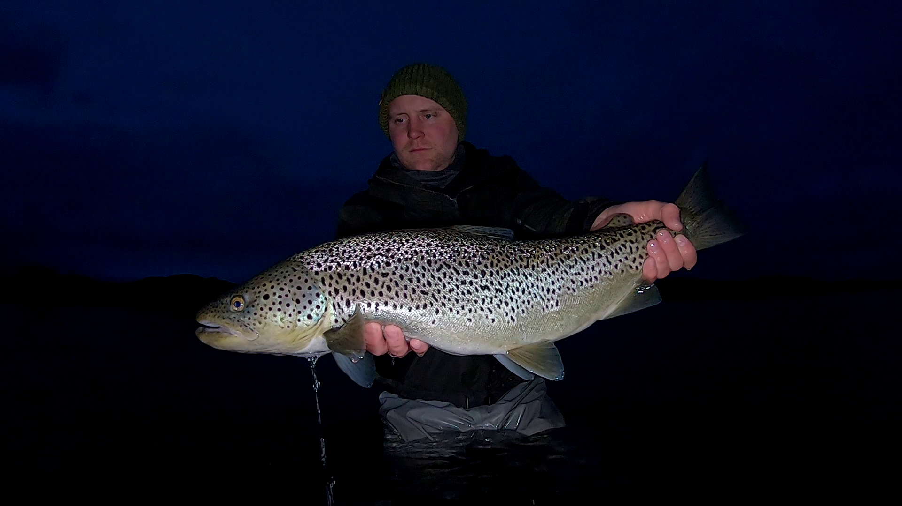
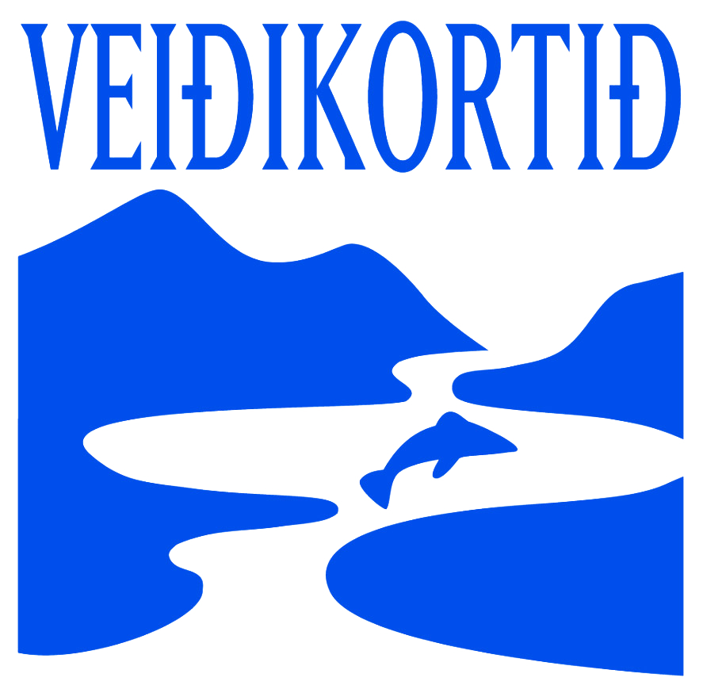

Þingvallavatn er ekki bara landslag. Það er lifandi heimur sem flestir sjá aðeins yfirborðið af. Undir kyrrum fletinum leynist veröld bleikju, urriða, vatnabobba og mýflugna sem hafa þróast í einangrun um árþúsundir. Þessi heimildamynd notar veiðina sem inngang inn í þá veröld, leið til að lesa vatnið, skilja lífríkið og nálgast náttúruna af þolinmæði og virðingu. Myndin fylgir fiskunum, smádýralífinu, birtunni, dýpinu, árstíðunum og fólkinu sem þekkir vatnið best, og spyr hvað bíður þessa einstaka vistkerfis í framtíðinni.
Sýnishorn
Myndbandið hér fyrir neðan er úr eldra verkefni um Þingvallavatn og gefur tilfinningu fyrir umhverfi og andrúmslofti vatnsins. Heimildamyndin sjálf fjallar um veiði í Þjóðgarðinum á Þingvöllum, og tökur fyrir hana hafa staðið yfir síðustu sumur, frá sumrinu 2024. Hér fyrir neðan eru einnig fyrstu stillur úr verkefninu, og fleiri sýnishorn verða birt eftir því sem því vindur fram.


Um heimildamyndina
Þingvallavatn er stærsta stöðuvatn Íslands og hluti af Þingvallaþjóðgarði, einum helgasta stað þjóðarinnar. Þessi heimildamynd kannar vatnið sem lifandi vistkerfi: samband fiska, smádýra, árstíða og landslags sem hefur mótast í einangrun um árþúsundir.
Sérstök áhersla er lögð á veiðisvæði þjóðgarðsins og lífkerfi vatnsins. Veiðin er ekki aðalatriðið sjálft, heldur leið inn í stærri sögu, leið til að lesa vatnið, skilja lífríkið og nálgast náttúruna af þolinmæði og virðingu.
Þemu

Þingvallavatn og þjóðgarðurinn
Sérstaða vatnsins, sagan og staðurinn sem geymir bæði náttúru og menningararf þjóðarinnar.

Bleikjan og afbrigði hennar
Eitt merkasta dæmi heimsins um hraða þróun: fjögur afbrigði bleikju sem hafa aðlagast sama vatninu á mismunandi hátt.

Urriðinn og næturveiðin
Stærsti urriði landsins leynist í djúpinu og kemur fram þegar myrkrið skellur á.

Mýflugan, vatnabobbinn og vorflugan
Smádýrin sem mynda undirstöðu fæðukeðjunnar og halda öllu vistkerfinu gangandi.

Hornsíli, murta og fæðukeðjan
Hvernig lítil dýr og smáfiskar tengja saman allt lífríki vatnsins, frá botni og upp.

Veiðiaðferðir og lestur vatnsins
Þekking sem veiðimenn hafa byggt upp um aldir: að lesa birtu, vind, dýpi og hegðun fiska.

Vísindi og sérfræðiþekking
Rannsóknir á lífríki vatnsins og því sem vísindamenn hafa lært af einu merkasta stöðuvatni heims.

Framtíð vatnsins
Hvað bíður Þingvallavatns og hvernig getum við varðveitt þennan einstaka heim?

Persónur, viðtöl og þekking
Myndin byggir á samtali við fólk sem þekkir Þingvallavatn: veiðimenn, vísindamenn og fólk sem hefur varið ævinni í að skilja þetta vatn betur.
Hluti af efnistökum og fyrirhugaðri rannsóknarvinnu er að ræða við sérfræðinga um æti bleikju og urriða, lífsferil vatnabobba, mýflugu og hornsílis, og um framtíðarhorfur silungastofnanna í vatninu. Þessi þekking er kjarninn í því að miðla sögu vatnsins af virðingu og nákvæmni.

Af hverju þetta skiptir máli
Þingvallavatn er einstakt á heimsvísu, bæði vegna jarðsögu þess og þess lífríkis sem hefur þróast í einangrun um árþúsundir. Að segja sögu þess er að segja sögu um náttúru, vísindi, menningu og samband fólks við landið.
Veiðimenn eru oft meðal mestu náttúruunnenda og bera djúpa umhyggju fyrir lífríkinu sem þeir stunda veiðar í. Þessi heimildamynd byggir á þeirri sömu eftirtekt og virðingu fyrir náttúrunni: hún er í grunninn veiðifræðslumynd sem notar veiðina til að opna fyrir stærri umræðu um lífríki, vistkerfi og náttúru Þingvallavatns. Þannig hefur hún fræðslugildi langt umfram veiðina sjálfa og á erindi við breiðan hóp, frá veiðimönnum til náttúruunnenda, vísindamanna og almennings.
Hvernig er hægt að leggja verkefninu lið
Þetta er sjálfstætt verkefni. Stuðningur, í hvaða mynd sem er, skiptir miklu máli.
Styrkja verkefnið fjárhagslega
Fjárhagslegur stuðningur hjálpar við tökur, búnað og eftirvinnslu.
Deila sögu, heimild eða tengingu
Þekkir þú sögu, stað eða tengingu við Þingvallavatn sem ætti heima í myndinni?
Bjóða fram myndefni eða aðgang
Eldra myndefni, aðgangur að stöðum eða tækjum getur nýst verkefninu vel.
Hjálpa við dreifingu, kynningu eða samstarf
Tengingar við fjölmiðla, stofnanir eða samstarfsaðila eru vel þegnar.
Styrkja verkefnið
Beinn stuðningur
Fyrir einstaklinga, fyrirtæki eða samtök sem vilja leggja verkefninu lið með beinum stuðningi.
Hafa samband um stuðningSamstarf
Fyrir aðila sem vilja tengjast verkefninu með aðgangi, þekkingu, myndefni, kynningu eða faglegu samstarfi.
Ræða samstarfSamstarfsaðilar
Verkefnið er unnið í samstarfi við Veiðikortið.
